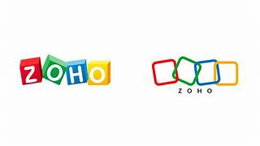
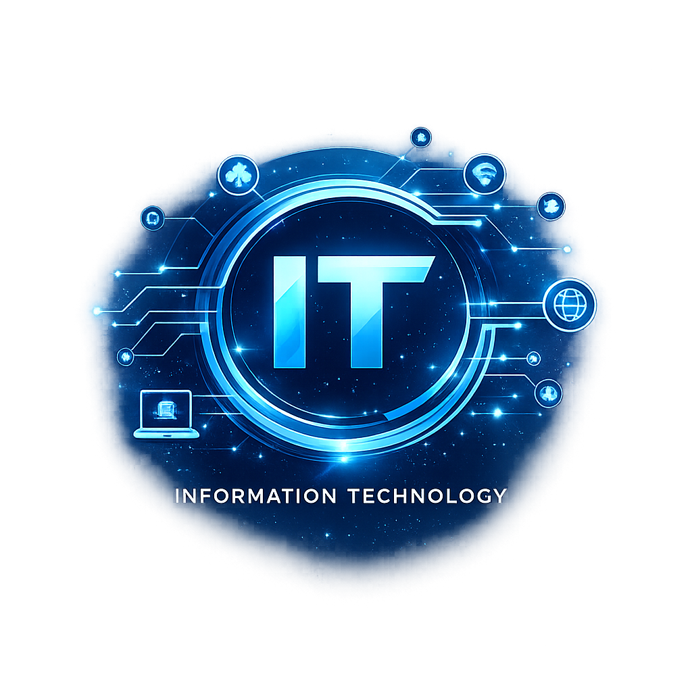
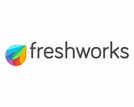
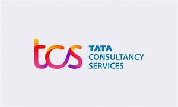
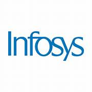

Zoho Corporation

Company Type : Product-Based
Zoho develops business software products including CRM, Mail, Books, Creator, Projects and many cloud applications used by millions of businesses worldwide.
Website : www.zoho.com

Chennai - India's Leading IT Hub
Chennai is one of India's largest Information Technology destinations. It is home to many multinational corporations, software development centers, and technology parks. The city offers excellent career opportunities for software engineers, web developers, cloud engineers, and data scientists.
Chennai is well known for both Product-Based and Service-Based companies. Organizations located here work in Artificial Intelligence, Cloud Computing, Enterprise Software, Cybersecurity, Data Analytics, and Digital Transformation.

Company Type : Product-Based
Zoho develops business software products including CRM, Mail, Books, Creator, Projects and many cloud applications used by millions of businesses worldwide.
Website : www.zoho.com

Company Type : Product-Based
Freshworks develops customer engagement software including Freshdesk, Freshservice, Freshsales and cloud-based business applications.
Website : www.freshworks.com

Company Type : Service-Based
TCS provides software development, consulting, cloud computing, artificial intelligence and digital transformation services across the globe.
Website : www.tcs.com

Company Type : Service-Based
Infosys is one of India's largest IT service companies offering consulting, software engineering, cloud solutions, AI and business technology services.
Website : www.infosys.com
For additional information about Chennai IT companies, internships, software careers, and technology updates, please use our Contact page on the Home screen.
This page provides information about the major IT companies located in Chennai. Click on the company website links to learn more about their products, services, career opportunities, and internship programs.